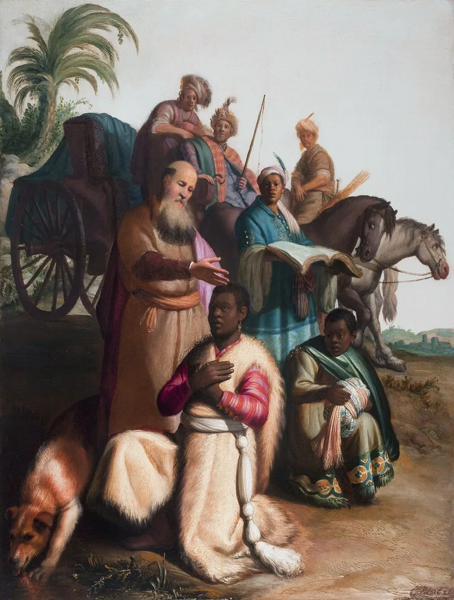
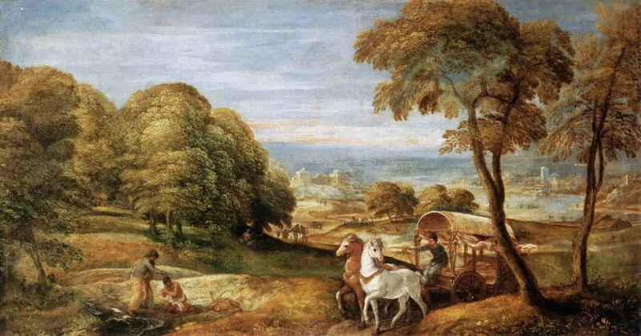

The text settles it — but concede the grievance first, or nothing will be heard.
That salvation belongs to the twelve tribes alone — Black, Hispanic and Native Americans. And that at Christ's return the Edomites will be killed or enslaved.
The anchor text is Matthew 15:24: "I am not sent but unto the lost sheep of the house of Israel."
Read on. The Canaanite woman answers him, and he says "O woman, great is thy faith: be it unto thee even as thou wilt." The verse they quote is in a story that ends the other way.
That the promises of Scripture are national and particular, made to a named people, and that universalising them is a later theft. Jeremiah 31:31 makes the new covenant "with the house of Israel." That is a real observation, and much of the church has been careless about it.
On its own texts. Isaiah 49:6 makes the servant "a light to the Gentiles." Genesis 12:3 promises that in Abraham all families of the earth will be blessed.
The particularity was always aimed at the nations.
The text answers this one decisively. But honour the demand for justice inside it rather than mocking it.
"Read me the rest of Matthew 15. What does he say to the woman?"


Christ said he was sent only to the lost sheep of the house of Israel.
The camps argue that the promises of Scripture are overwhelmingly national and particular. They are made to a named people, and universalising them is a later theft.
Christ says He was not sent but to the lost sheep of the house of Israel. The new covenant in Jeremiah 31:31 is made 'with the house of Israel, and with the house of Judah,' not with the nations. The disciples are told at first not to go into the way of the Gentiles (Matthew 10:5-6). They read prophecies of the nations serving Israel (Isaiah 60:12; Isaiah 61:5-6) as describing the coming order rather than as metaphor.
Their moral claim is that a God who watched four hundred years of atrocity without a reckoning would not be just. The promised judgment on oppressors is what makes Him just.
Honour the demand for justice first. Then Matthew 15 settles it.
Honour the demand for justice inside the claim, rather than mocking it. God does judge oppressors, and Scripture says so without embarrassment. The church that stayed quiet through slavery is in no position to be impatient here.
But the particularity argument dies on its own proof text. Matthew 15:24 is spoken four verses before Jesus heals a Canaanite woman's daughter and praises her faith. Matthew 10:5-6 describes one limited mission, and Matthew 28:19 explicitly supersedes it. Acts 10 is a set-piece written to settle this exact question, and Peter has to be corrected by God to reach it.
Isaiah 49:6 calls it 'a light thing' to raise up the tribes of Jacob. It then gives the servant the greater commission of being a light to the Gentiles. The doctrine also has a documented harm record, which the ADL and SPLC files set out.